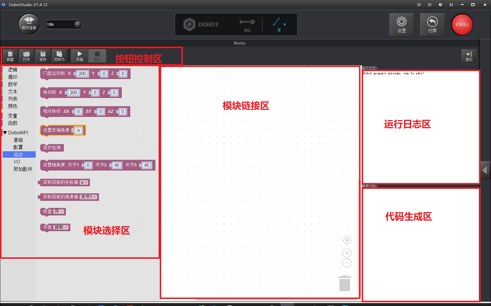

Blockly图形化编程
Basic Introduction
界面分为(控制按钮区、模块选择区、模块链接区、代码生成区、运行日志区)等五个区域。

- 控制按钮区：

- 新建New：新建Blockly文档;
- 打开Open：打开现有的Blockly文档;
- 保存Save：保存当前的Blockly程序;
- 另存为SaveAs：保存当前的Blockly程序，并重新输入文件名;
- 开始Start：开始运行当前的Blockly程序，按照模块自上而下的顺序;
- 停止Stop：停止运行当前的Blockly程序。
运行日志区：

此区域是运行的日志信息，可以观察出机械臂运行状况。
代码生成区：

此区域是当前模块链接区窗口中的图形化模块所对应的程序代码，可以根据生成的脚本逻辑，判断模块是否链接错误。
模块选择区：

此区域是图形化模块选择区。包含逻辑、循环、数学以及Dobot 专属API 等，直接拖动到窗口中就可以进行程序设计。Dobot专属API可以对Dobot进行全方位的操作，如速度/加速度设置、末端设置、运动模式设置、单轴或坐标系控制以及各接 口的I/O配置等。通过这些API，可以极大的方便用户进行二次开发。
模块链接区：

图形化程序设计主窗口，可以对模块进行链接，编辑等。